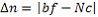
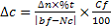
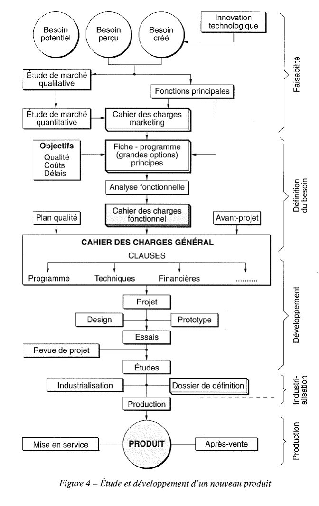
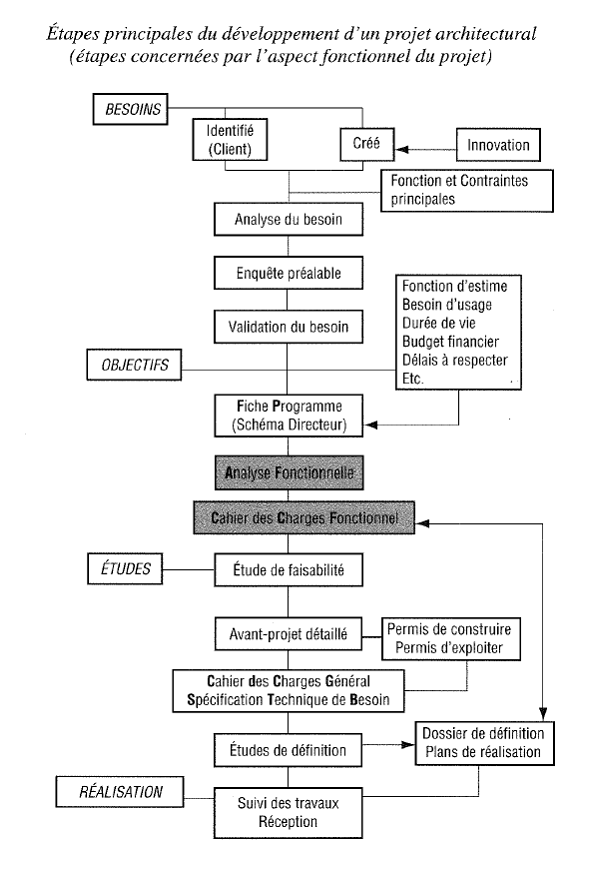
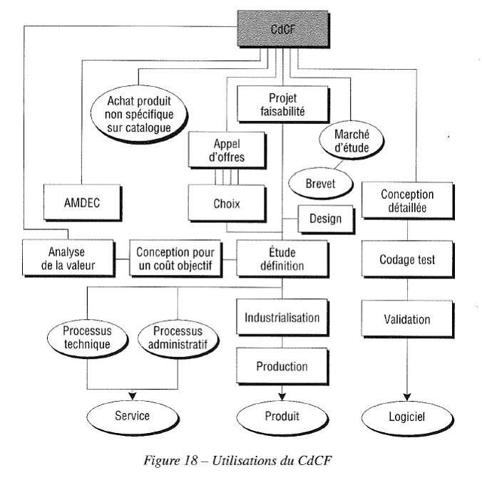

Exprimer le besoin - AFNOR GESTION de l'A.F.A.V.
Expression du besoin et cahier des charges fonctionnel - Elaboration et rédaction - AFNOR
Fiche outil N°2 cahier des charges fonctionnel – Rectorat de Strasbourg
Inciter le demandeur à s'exprimer en termes d'obligation de résultats, de préférence aux obligations de moyens. En donnant une référence fonctionnelle du besoin, il contribue à l'obtention de la Qualité définie comme “ l'aptitude d'un produit à satisfaire les besoins des utilisateurs ”. Le Cahier des Charges Fonctionnelle, par son caractère fonctionnel, ses règles de flexibilité et les moyens mis en œuvre pour l'élaborer, oriente la recherche de la définition technico-économique optimale du produit. Il favorise le dialogue entre les partenaires tout en restituant à chacun ses responsabilités. En libérant le jeu des techniques et des technologies, il renforce les chances d'émergence de l'innovation.
Document par lequel le demandeur exprime ses besoins (ou ceux dont il a la charge d’exprimer) en termes de fonctions de service et de contraintes. Pour chacune d’elle, sont définis des critères d’appréciation ainsi que leurs niveaux, chacun d’entre eux étant assorti d’un certain degré de flexibilité.
(1) la fonction de service (FS) est à relever dans les conclusions de la phase de recherche. Par exemple dans un diagramme “ pieuvre ” de la démarche AP.T.E.
(2) le critère d'appréciation qui provient des mots clés de la fonction de service. Ces mots clés sont, soit à relever directement, soit à déduire de l'intitulé de la FS. Il représente la caractéristique utilisée pour évaluer la performance attendue du produit ou celle qu’il réalise.
(3) le niveau qui précise la valeur nominale du critère d'appréciation.
(4) la flexibilité est exprimée par le demandeur, elle indique la variation acceptée du niveau du critère d'appréciation. La flexibilité est une caractéristique fondamentale du CdCF car elle permet d'organiser le dialogue entre partenaires dans la recherche d'une véritable optimisation. La flexibilité se décline en limite d'acceptation et en taux d'échange.
(5) la classe de flexibilité est une indication littérale qui permet de préciser son degré de négociabilité ou d’impérativité d’un critère d’appréciation.
(6) la limite d'acceptation précise le domaine de validité concernant le niveau du critère d'appréciation. Ainsi toute solution ne respectant pas la limite d'acceptation d'une fonction, est inacceptable. De ce fait, le demandeur doit être extrêmement conscient des conséquences du choix de ces limites.
(7) le taux d'échange indique la variation acceptée du coût de cette fonction, correspondante à celle du critère d'appréciation exprimée par la limite d'acceptation. Cette information provient d’une analyse de la valeur (AV).
(8) d'éventuelles observations qui permettent au concepteur d'éclairer le réalisateur (exemple : Référence à une norme)
Exemple : FC1 = résister et respecter le milieu environnant (exemple générique)
Produit : |
||||||
FONCTION (1) |
CRITERES D’APPRECIATION (2) |
NIVEAU (3) |
FLEXIBILITE (4) |
OBSERVATION |
||
CLASSE (5) |
LIMITE D’ACCEPTATION (6) |
TAUX D’ECHANGE (7) |
||||
FP1 etc... |
- résister . indice de corrosion . indice d’étanchéité . tenue au soleil - respecter . niveau sonore . émission de gaz |
6 8 120 85 dB etc… |
+ 2 - 30% - 40 + 5 dB |
10% 5% 15% 15% |
Test selon NF… Test selon NF… Mesure selon… Selon DIN… |
|
A PROPOS DE LA FLEXIBILITE :
Elle peut être exprimée de façon qualitative (« classe » de flexibilité) ou de façon quantitative (limite d’acceptation et en particulier en termes de rapport avantages-coût).
« Classe » de flexibilité : utilisation simple mais définition de la flexibilité assez vague.
On peut, par exemple, définir quatre classes de flexibilité :
Limite d’acceptation : utilisation plus complexe mais plus rigoureuse, donc à privilégier.
Avec : D = domaine de validité du niveau du critère d’appréciation identification des bornes : a = borne inférieure et b = borne supérieure
Classification des bornes : borne favorable (bf) et borne défavorable (bd)
Nc = niveau effectif obtenu par la solution
Cf = coût de la fonction pris au niveau de référence (colonne 3)
%t = taux d’échange
n = variation du niveau
c = variation du coût
1 – Contrôler le domaine de validité
2 – Évaluer la variation du niveau : 
3 – Calculer la variation du coût : 
4 – Estimer le nouveau coût acceptable de la fonction : N.coût = Cf +/- c selon que c correspond à une plus-value (s’approche de la borne favorable) ou à une moins-value (s’éloigne de la borne favorable).



Created with the Personal Edition of HelpNDoc: Easy to use tool to create HTML Help files and Help web sites